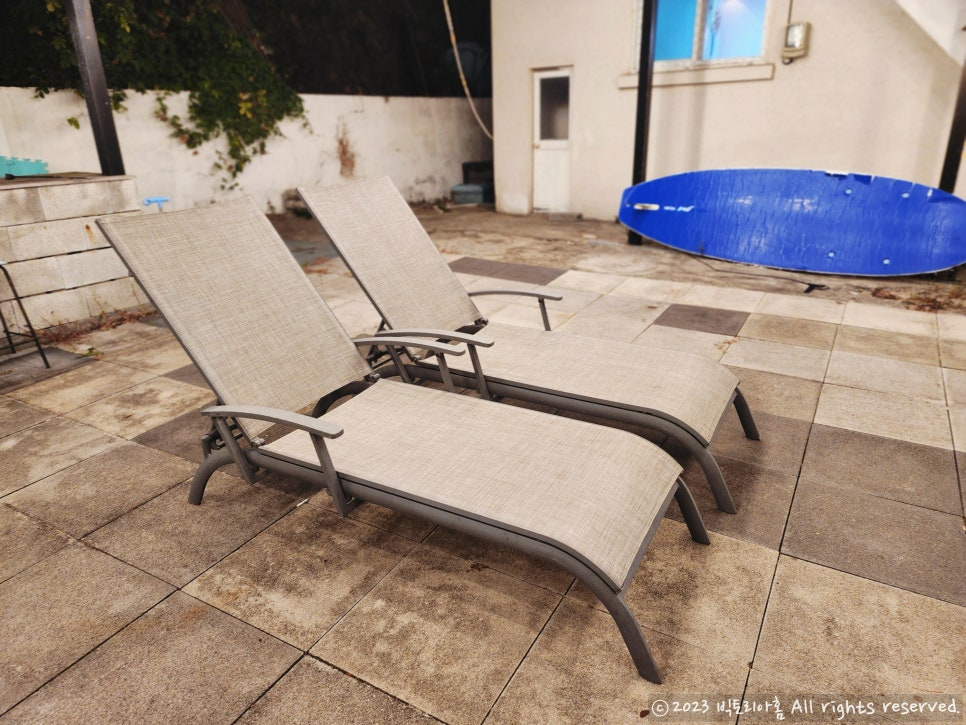
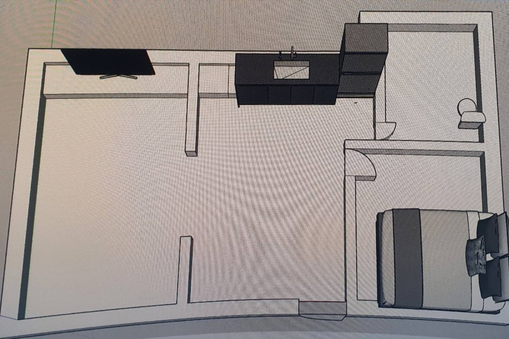
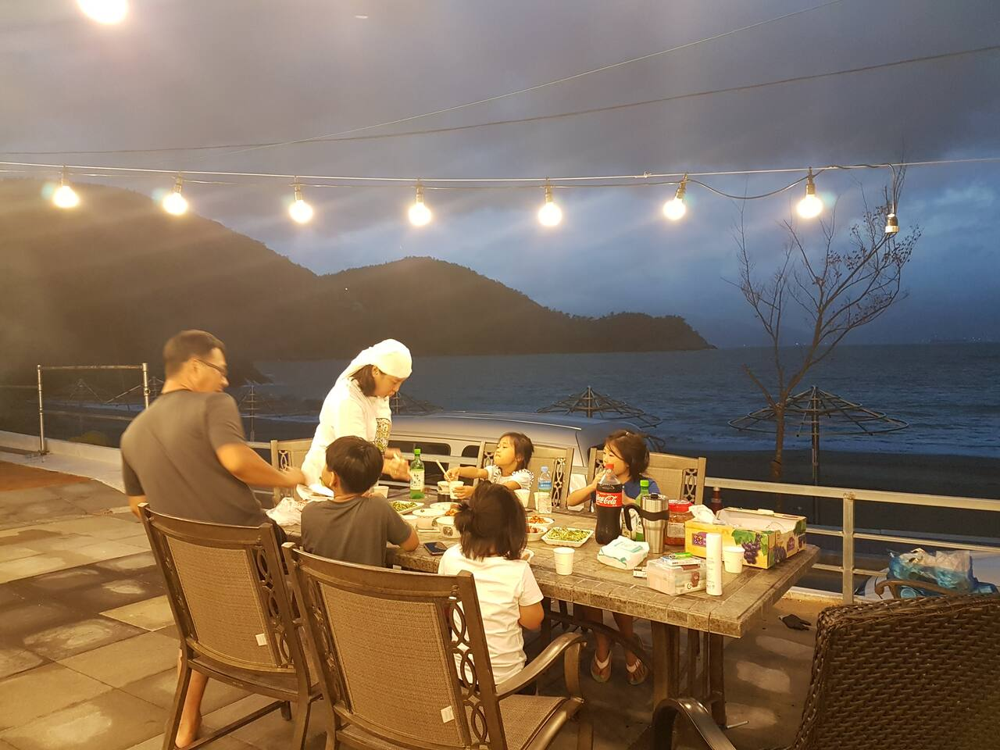
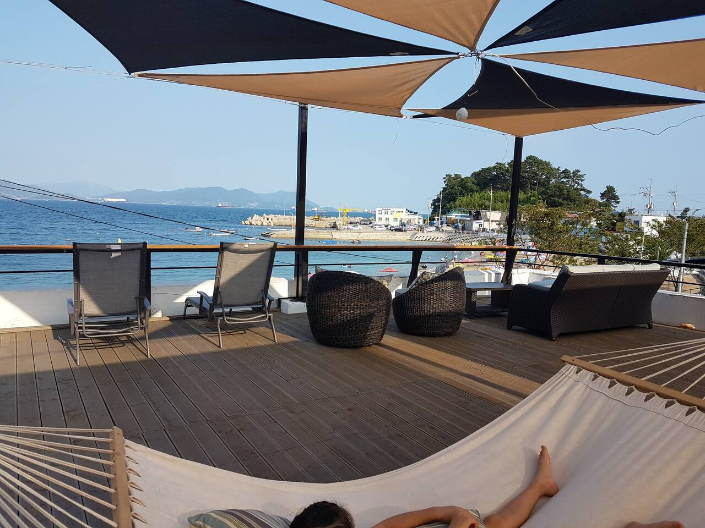
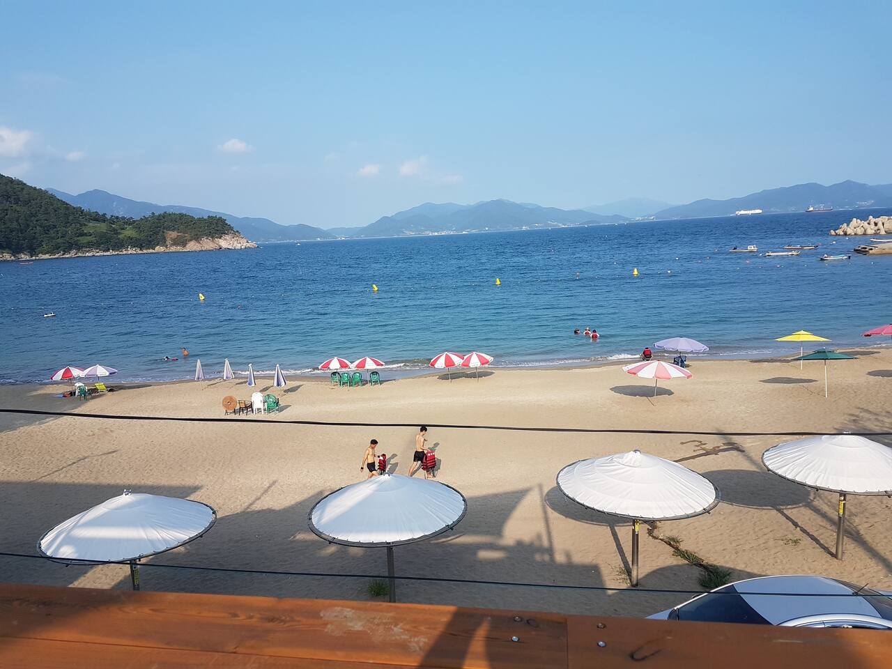
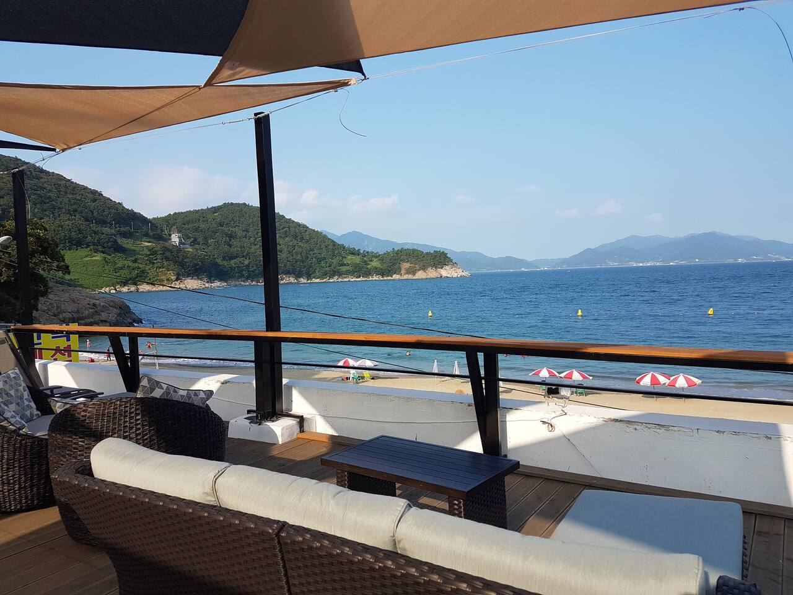
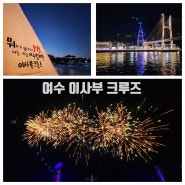
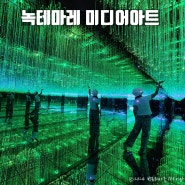

{kind=link}
LIVING & KITCHEN
거실 · 주방
문을 열면 바로 나오는 한 공간입니다. 통유리 너머로 모사금 바다가 보이고, 4인 식탁과 싱크, 냉장고가 한쪽에 붙어 있어 간단한 요리와 포장 음식을 먹기 좋습니다.

ABOUT PRIVATE
여수엑스포역에서 차로 약 13분, 마래 제2터널을 지나면 모사금 해수욕장이 나옵니다. 프라이빗펜션은 해변 바로 앞, 아래쪽 단층 독채입니다. 언덕 위 카페·다층 건물은 옆집입니다.
넓은 야외 테라스에 불을 밝혀 두어 밤에도 찾기 쉽고, 옥상 루프탑으로 올라가면 남해 바다와 해안 산책로가 한눈에 들어옵니다. 다른 손님을 신경 쓰지 않고, 가족이나 친구끼리 오붓하게 머무는 집입니다.
ROOMS
실내는 가정집 한 채 규모입니다. 현관을 열면 거실·주방이 한 공간으로 이어지고, 오른쪽 아래가 침대방, 오른쪽 위가 화장실입니다. 취침은 4명이 여유롭고, 마당·테라스가 실내보다 넓습니다.

스마트플레이스에 등록된 숙소 평면도입니다. 클릭하면 크게 볼 수 있습니다.
LIVING & KITCHEN
문을 열면 바로 나오는 한 공간입니다. 통유리 너머로 모사금 바다가 보이고, 4인 식탁과 싱크, 냉장고가 한쪽에 붙어 있어 간단한 요리와 포장 음식을 먹기 좋습니다.
BEDROOM
현관에서 오른쪽 방입니다. 더블 침대 한 대가 벽을 차지하고, 옆에 화장대와 의자가 있어 두 명이 자기에 맞는 방입니다. 창문이 두 면이라 커튼을 열면 바깥이 바로 보입니다.
ONDOL
현관에서 왼쪽 방입니다. 큰 TV와 이불장이 한쪽 벽을 차지하고, 의자 3개와 둥근 테이블이 가운데 있습니다. 의자를 치우면 이불을 펼쳐 세 명이 넉넉히, 네 명까지도 잘 수 있습니다.
BATH
거실 안쪽으로, 한 단 아래에 있습니다. 세면대·샤워·변기가 한 공간인 넓은 습식 화장실이라 아이와 함께 쓰기 편합니다. 숙소 화장실은 한 곳입니다.
SPACES
저녁에는 야외에서 고기를 굽고, 아침에는 루프탑에서 커피 한 잔과 일출을 볼 수 있습니다.

큰 테이블과 그릴이 있는 테라스에서 우리끼리 저녁을 먹습니다.

옥상 데크에서 모사금 앞바다를 내려다보며 해먹과 선베드를 씁니다.

난간만 넘으면 모래사장입니다. 파라솔과 바다까지 한눈에 들어옵니다.

독채라 마당과 테라스를 우리만 씁니다. 실내보다 바깥이 넓습니다.
GALLERY
스마트플레이스에 올린 숙소 사진과, 실내·해변 사진을 함께 담았습니다.
AIRBNB REVIEWS
호스팅 당시 에어비앤비에 남겨진 실제 후기 155개를 연도별로 정리했습니다.
YEOSU
숙소에서 밤바다를 보고, 낮에는 여수 시내의 크루즈와 미디어아트까지 이어집니다.

여수 밤바다 · 이사부 크루즈
녹테마레 미디어아트LOCATION
전라남도 여수시 오천4길 47 · 모사금 해수욕장 해변 바로 앞
RESERVATION
조용한 독채를 찾는 분들께 추천합니다. 날짜와 인원을 남겨 주시면 전화로 빠르게 안내해 드립니다.
0507-1379-4004
전남 여수시 오천4길 47
{kind=link}
{kind=link}
{kind=link}
{kind=link}
{kind=link}
{kind=link}
{kind=link}
{kind=link}
{kind=link}
{kind=link}
{kind=link}
{kind=link}
{kind=link}
{kind=link}
{kind=link}
{kind=link}
{kind=link}
{kind=link}
{kind=link}
{kind=link}
{kind=link}